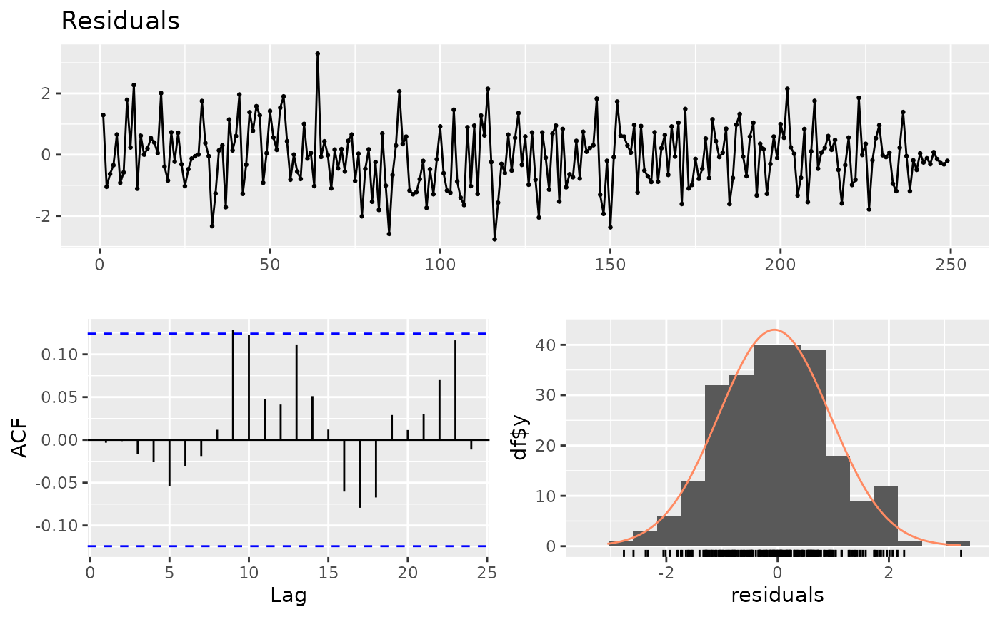

tempssm: State-space modeling for temperature time series in R
Version 0.3.0
Akira S. Hirao, Shinya Baba, and Momoko Ichinokawa
2026-07-27
Source:vignettes/getting-started.Rmd
getting-started.RmdSummary
tempssm is an R package for analyzing environmental
temperature time series, including air and water temperature
observations. It provides a practical framework for assessing how
long-term trend, seasonal variation, autoregressive dependence, and
optional exogenous effects contribute to observed temporal variation.
The package facilitates the application of linear Gaussian state-space
models estimated by Kalman filtering and smoothing, using the
KFAS package as the computational backend (Helske,
2017).
The core modeling functions in tempssm expect input
temperature series and optional exogenous covariates to be supplied as
regularly spaced R ts objects (see the
stats::ts documentation: https://search.r-project.org/R/refmans/stats/html/ts.html).
The package also provides utility functions for converting common
tabular and observational data formats into ts objects
before model fitting.
Key features
- Designed for temperature time series with arbitrary seasonal frequencies; currently validated primarily on monthly data
- Estimates latent states using linear Gaussian state-space models combined with Kalman filtering and smoothing
- Models temperature dynamics as a sum of interpretable latent components, including long-term trend, seasonal variation, autoregressive dependence, and optional exogenous effects
- Allows users to specify an arbitrary order of the autoregressive component (default: AR(1))
- Implements time-series cross-validation for model evaluation
Prior Art and Scope
tempssm provides a domain-focused workflow for analyzing
temperature time series with linear Gaussian state-space models. It
brings together model construction, component extraction, uncertainty
summaries, residual diagnostics, visualization, and time-series
cross-validation in a single R package interface tailored to temperature
applications.
The package builds on established statistical methodology, including
linear Gaussian state-space modeling, Kalman filtering, and Kalman
smoothing. Model estimation is handled through the KFAS
package, which provides a general framework for state-space models in
R.
The initial implementation was adapted from the supplementary code provided by Baba (2024), accompanying Baba et al. (2024), which analyzed sea temperature trends using a linear Gaussian state-space model. The supplementary code is publicly available at:
https://github.com/logics-of-blue/sea-temperature-trend-jogashima
Compared with that prior implementation, tempssm extends
the workflow into a reusable R package interface with input validation,
documented S3 methods, tests, diagnostics, cross-validation utilities,
and examples for broader temperature time-series analysis.
The next section gives a brief model overview. A separate model specification vignette describes the mathematical formulation in more detail.
Model Overview
tempssm represents temperature variation with a linear
Gaussian state-space model composed of interpretable latent components:
a long-term trend, seasonal variation, autoregressive dependence, and
optional exogenous effects. The model is estimated with
KFAS, and tempssm() returns both filtering and
smoothing estimates. Unless otherwise stated, the summaries,
diagnostics, and plots in this vignette use smoothed state
estimates.
The full mathematical specification, including the observation
equation, state decomposition, seasonal constraint, autoregressive
component, exogenous component, parameter count, and estimation
procedure, is described in the separate model specification vignette. In
an installed package, it can be opened with
vignette("model-specification", package = "tempssm").
How to use
Input Data Format
Input data for tempssm must be supplied as an R
ts object, which represents a regularly spaced time series
(see ?stats::ts or https://search.r-project.org/R/refmans/stats/html/ts.html).
To support data preparation, the package includes utility functions
that convert external observational data into ts objects
suitable for model fitting (see Appendix).
Practice: Applying State-Space Model to a Univariate Temperature Time Series
Objective
The objective of this practice is to demonstrate the basic application of a linear Gaussian state-space model to a univariate temperature time series. This example serves as an introduction to the modeling framework and highlights the role of autoregressive dynamics without the inclusion of exogenous variables.
Loading the Dataset
A sample sea surface temperature (SST) dataset is included in the package.
-
Dataset: Monthly sea surface temperature (SST) off
Niigata, Japan
-
Unit: Degrees Celsius
- Period: February 2002 to December 2023
This dataset is derived from observations archived at Japan Oceanographic Data Center (JODC), Hydrographic and Oceanographic Department, Japan Coast Guard. Original daily SST data were obtained from https://www.jodc.go.jp/jodcweb/JDOSS/index.html and aggregated into monthly means.
## Jan Feb Mar Apr May Jun
## 2002 9.951613 8.332143 9.348387 11.713333 14.529032 18.906667
summary(niigata_sst)## Temp
## Min. : 7.707
## 1st Qu.:11.217
## Median :16.345
## Mean :17.033
## 3rd Qu.:22.787
## Max. :28.897
## NAs :2The dataset includes two missing observations. Even if missing observations was in your dataset included, there are retained and handled explicitly within the state-space modeling framework.
Plotting the Monthly SST Time Series
We begin by visualizing the monthly SST time series to examine its overall structure, including apparent trends, seasonal variability, and missing observations.
plt_niigata_sst <- forecast::autoplot(niigata_sst) +
ggplot2::labs(
y = expression(Temperature ~ (degree * C)),
x = "Time (year)"
) +
ggplot2::ggtitle("Monthly SST off Niigata, Japan") +
ggplot2::theme_classic()
plot(plt_niigata_sst)
The overall mean SST is approximately 17 °C, and a clear seasonal pattern is visible. The series contains two missing observations, in September 2005 and February 2006. Although SST appears to be higher near the end of the series than near the beginning, year-to-year variability is also evident, making the long-term trend difficult to assess from the raw time series alone.
Applying a Linear Gaussian State-Space Model
When a ts object containing temperature time-series data (here,
niigata_sst) is passed to the core function tempssm(),
model construction and parameter estimation are performed together. The
returned S3 object of class tempssm (here, res) stores the
filtering and smoothing estimates, as well as the constructed model and
input data. By default, tempssm() fits a first-order autoregressive
model.
# model with first-order autoregressive component
res <- tempssm(niigata_sst) # AR(1), the default model
summary(res)## tempssm summary
## -----------------
## Call:
## tempssm(temp_data = niigata_sst)
##
## Model fit:
## Likelihood type: marginal
## Log-likelihood : -249.8
## k : 5
## Diffuse states : 13
## Converged : TRUE
##
## Variance parameters:
## Observation (H): 0.005985637
## State (Q trend): 1.268117e-07
## State (Q season): 0.001346139
## State (Q ar): 0.4097883
##
## Components of auto-regression:
## Order of AR: 1
## Coefficient of AR1: 0.7442999From the summary output, confirm that the model has converged (Converged: TRUE). The output also reports statistics such as the number of parameters (k), the log-likelihood, the likelihood type, and the number of diffuse initial states. The parameter estimates include the observation error variance (H), the process error variance of the long-term trend component (Q trend), the process error variance of the seasonal component (Q season), the process error variance of the autoregressive component, and the first-order autoregressive coefficient (AR1).
The log-likelihood and the associated number of estimated parameters
can also be extracted directly from the fitted tempssm
object using logLik().
ll <- logLik(res)
ll## 'log Lik.' -249.7962 (df=5)
attr(ll, "df") # number of parameters## [1] 5By default, tempssm() uses the KFAS marginal likelihood
for parameter estimation. The selected likelihood type is retained for
logLik() and summary(). The package
intentionally does not compute AIC for tempssm objects. The
log-likelihood and parameter count remain available through
logLik() for users who need them for their own
model-assessment workflows. The diffuse likelihood remains available by
fitting the model with marginal = FALSE.
Plotting Level, Drift, Seasonal, and Auto-Regressive Components
We visualize the estimated long-term evolution of temperature levels and their rates of change (drift) by extracting the corresponding latent components from the state-space model. Additionally, seasonal variability and autoregressive dependence are plotted out, allowing the underlying trend behavior to be examined more clearly.
# plot all components at once
plot(res)
The level component shows a persistent upward trend in sea surface temperature over the study period, while the drift component indicates a relatively stable positive rate of change. The shaded gray areas represent 95% confidence intervals for the estimated latent states, illustrating the uncertainty associated with each of estimated components.
Although the observed time series contains missing values, the state-space framework allows latent states to be estimated for the entire time span, including unobserved periods.
The standard plotting interface is plot(res). The
ggplot2-style interface autoplot(res) is also available and
produces the same component plot by default. It returns a faceted
ggplot object, so selected components can be stored and
customized with standard ggplot2 layers, for example,
autoplot(res, component = c("level", "drift")) + ggplot2::theme_bw().
Simple Model Diagnostics
The package provides diagnostic tools for checking whether the fitted model has left notable structure in the residuals. In particular, residual time-series plots, residual autocorrelation, residual distributions, and Ljung-Box tests can be used to assess remaining temporal dependence and departures from the Gaussian error assumption.

In the model diagnostic plot, the upper panel shows the residual time series, the lower-left panel shows the residual autocorrelation plot (ACF plot), and the lower-right panel shows the residual frequency distribution. These plots should be checked for any notable residual patterns.
diag <- diagnose_residuals(res)
print(diag)## # A tibble: 1 × 4
## lb_stat lb_lag lb_pvalue kurtosis
## <dbl> <dbl> <dbl> <dbl>
## 1 10.7 12 0.558 3.06The lb_stat, lb_lag, and
lb_pvalue columns correspond to the Ljung-Box test
statistic, the lag used in the test, and its P-value, respectively. For
monthly time series, diagnose_residuals() uses lag 12 by
default. In this example, the Ljung-Box test indicated no significant
residual autocorrelation up to lag 12 (P > 0.05).
Estimated Parameters and Latent-State Components
The long-term trend component and its rate of change (drift) can be extracted as ts objects as follows.
# Smoothing estimates
alpha_hat <- res$kfs$alphahat
head(alpha_hat)## level slope sea_dummy1 sea_dummy2 sea_dummy3 sea_dummy4
## Jan 2002 16.3944 0.005600278 -6.624678 -3.337435 0.6067452 4.7593086
## Feb 2002 16.4000 0.005600419 -7.676822 -6.624678 -3.3374348 0.6067452
## Mar 2002 16.4056 0.005600414 -7.346316 -7.676822 -6.6246785 -3.3374348
## Apr 2002 16.4112 0.005600309 -5.476554 -7.346316 -7.6768221 -6.6246785
## May 2002 16.4168 0.005600333 -2.217000 -5.476554 -7.3463157 -7.6768221
## Jun 2002 16.4224 0.005600466 2.468021 -2.217000 -5.4765544 -7.3463157
## sea_dummy5 sea_dummy6 sea_dummy7 sea_dummy8 sea_dummy9 sea_dummy10
## Jan 2002 8.5280152 9.9007961 6.4159191 2.4680213 -2.217000 -5.476554
## Feb 2002 4.7593086 8.5280152 9.9007961 6.4159191 2.468021 -2.217000
## Mar 2002 0.6067452 4.7593086 8.5280152 9.9007961 6.415919 2.468021
## Apr 2002 -3.3374348 0.6067452 4.7593086 8.5280152 9.900796 6.415919
## May 2002 -6.6246785 -3.3374348 0.6067452 4.7593086 8.528015 9.900796
## Jun 2002 -7.6768221 -6.6246785 -3.3374348 0.6067452 4.759309 8.528015
## sea_dummy11 arima1
## Jan 2002 -7.346316 0.175231631
## Feb 2002 -5.476554 -0.377441280
## Mar 2002 -2.217000 0.286840201
## Apr 2002 2.468021 0.767966301
## May 2002 6.415919 0.330186811
## Jun 2002 9.900796 0.009042377
# Smoothing estimate of level component
level_ts <- get_level_ts(res)
# Smoothing estimate of drift component
drift_ts <- get_drift_ts(res)
# Average drift rate per year across the full period
mean_drift_year <- mean(drift_ts)
print(mean_drift_year)## [1] 0.05259212Average annual increase in SST is approximately 0.05 °C.
Short-Term Prediction
A fitted tempssm object can also be passed to
predict() to obtain short-term predictions. By default,
predict(res) returns a one-step-ahead prediction beyond the
end of the observed series. This is useful for visual checks of how the
fitted model extrapolates the estimated level, seasonal, and
autoregressive components.
pred_1 <- predict(res)
pred_1## Jan
## 2024 10.61997Predictions for multiple future time points can be requested by
setting the n.ahead argument.
pred_12 <- predict(res, n.ahead = 12)
pred_12## Jan Feb Mar Apr May Jun Jul
## 2024 10.619965 9.500226 10.198500 11.757055 15.414159 19.704126 24.218778
## Aug Sep Oct Nov Dec
## 2024 27.331048 25.941035 22.395225 18.262379 14.141777These predictions should be interpreted as model-based extrapolations rather than definitive forecasts. Uncertainty generally increases as the prediction horizon becomes longer, and long-horizon predictions can be sensitive to model assumptions about trend, seasonality, and autoregressive dependence.
The examples above illustrate the basic univariate workflow for
fitting, diagnosing, visualizing, and making short-term predictions from
a tempssm model. The detailed manual extends this workflow
to exogenous variables, additional model diagnostics, and time-series
cross-validation:
https://github.com/akihirao/tempssm/blob/main/tools/manual/tempssm_manual.pdf